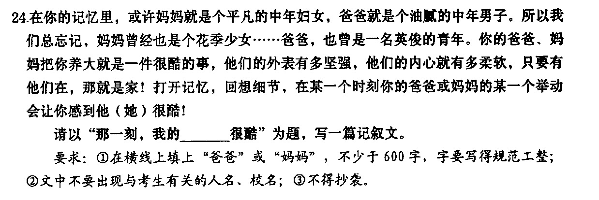

假结局 FAKE END
Ended... or not?
各部分目录
读亚洲略图，完成下列各题。
已知关于 x, y 的方程组 x+3y=4-a, x-5y=3a, 给出以下结论:
结局 2 全程
单项选择 A&B
PARTID 01 | 出现结局: 1/2/3
你可以在本部分里选择A或者是B.
结局分叉:
作文
PARTID 03 | 出现结局: 1/2
24. 在你的记忆里，或许妈妈就是个平凡的中年妇女，爸爸就是个油腻的中年男子。所以我们总忘记，妈妈曾经也是个花季少女……爸爸，也曾是一名英俊的青年。你的爸爸、妈妈把你养大就是一件很酷的事，他们的外表有多坚强，他们的内心就有多柔软，只要有他们在，那就是家！打开记忆，回想细节，在某一个时刻你的爸爸或妈妈的某一个举动会让你感到他（她）很酷！
请以 “那一刻，我的____很酷” 为题，写一篇记叙文。
要求: ①在横线上填上"爸爸"或"妈妈"，不少于600字，字要写得规范工整; ②文中不要出现与考生有关的人名、校名; ③不得抄袭。